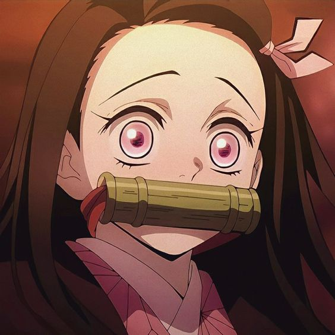
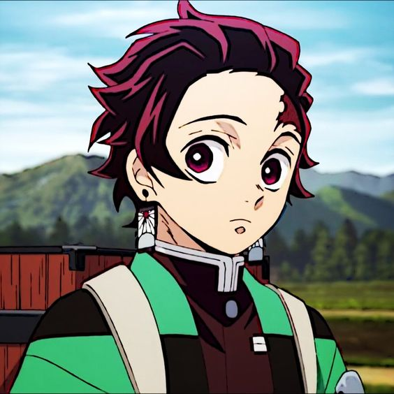
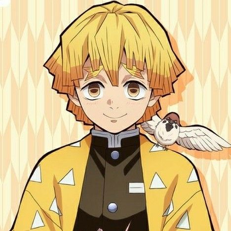
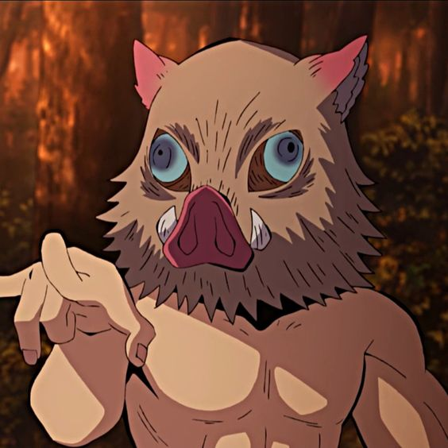

Estamos en la era Taisho de Japón. Tanjiro, un joven que se gana la vida vendiendo carbón, descubre un día que su familia ha sido asesinada por un demonio. Para empeorar las cosas, su hermana menor Nezuko, la única superviviente de la masacre, ha sufrido una transformación en demonio. Destrozado por los acontecimientos Tanjiro decide convertirse en un cazador de demonios para poder devolver a su hermana a la normalidad y matar al demonio que masacró a su familia.
   Ambientada en la era Taisho, la historia se centra en un joven llamado Tanjiro Kamado; un joven inteligente y de buen corazón que vive con su familia en las montañas, el cual se ha convertido en la única fuente de ingresos de su familia tras el fallecimiento de su padre, haciendo viajes al pueblo cercano para vender carbón.
Sin embargo, toda su vida cotidiana cambia radicalmente cuando en uno de estos viajes, regresa a casa y descubre que toda su familia había sido asesinada por un poderoso demonio llamado Muzan Kibutsuji, siendo únicamente su hermana menor llamada Nezuko Kamado la única sobreviviente de aquel incidente, pero mientras trata de llevar a Nezuko al pueblo cercano para pedir ayuda, inesperadamente su hermana se despierta en pleno trayecto y se transforma en una demonio y trata de atacar a Tanjiro, pero a pesar de su condición Nezuko aun guarda signos de emociones y pensamiento humanos y trata en todo lo posible por no matar a su hermano.
Sin embargo, su encuentro es rápidamente interrumpido por un joven llamado Giyū Tomioka, un poderoso espadachín integrante de la elite de los Hashira, cronológicamente siendo el actual Hashira del agua, el cual pertenece a una organización secreta de asesinos de demonios conocidos como 'Demon Slayers', el cual en un principio intenta matar a Nezuko por su condición de demonio, pero después de ver la determinación de Tanjirō por protegerla y de que su hermana Nezuko aun siendo una demonio intente protegerlo también, Tomioka decide perdonarle la vida por esta vez a Nezuko, no sin antes colocarle un bozal de bambú en la boca como precaución por sus colmillos.
Posteriormente Tomioka recluta a Tanjiro y lo envía con su antiguo maestro Sakonji Urokodaki, un antiguo miembro del Cuerpo de Demon Slayers, para que éste le enseñe a convertirse también en un asesino de demonios y comienza su búsqueda para ayudar a su hermana a convertirse nuevamente en humana y vengar la muerte del resto de su familia que fue asesinada. En su aventura conoce a los 'Pilares', quienes son los miembros más fuertes de la organización, en donde Tanjiro emprenderá una aventura acompañada de amigos.